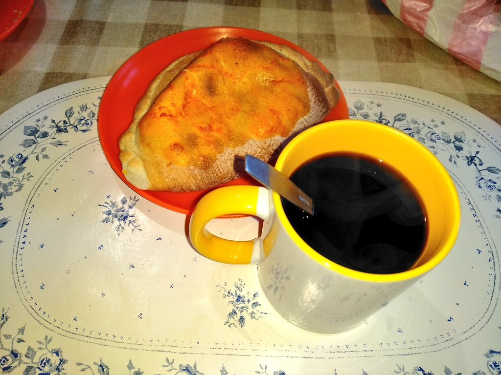

Beneficios de las Llauchas
Las llauchas son una comida típica boliviana asequible y accesible para todos. Son ricas en sabor y tienen un gran valor cultural en Bolivia.
Información Nutricional (por porción)
| Nutriente | Cantidad |
|---|---|
| Calorías | 250 kcal |
| Proteínas | 8 g |
| Grasas | 10 g |
| Carbohidratos | 30 g |
Disfruta de una Llaucha
La llaucha es perfecta para cualquier momento del día. Aquí te mostramos algunas imágenes de su deliciosa presentación:

Curiosidades
- El nombre "llaucha" proviene de una palabra en aimara que significa "caliente".
- Es común acompañar las llauchas con té o café para el desayuno en Bolivia.
- En algunas regiones, las llauchas se preparan con ají colorado, lo que les da un tono rojizo.